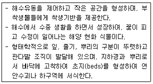
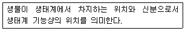
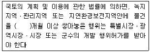
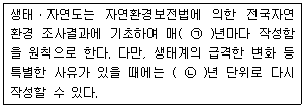
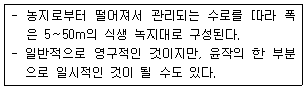
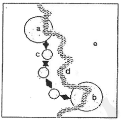
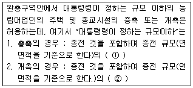
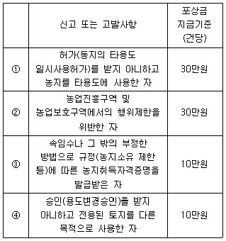
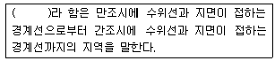
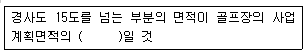

자연생태복원기사(구) (2009-08-30 기출문제)
1과목: 환경생태학개론
1. 습원의 생육지 환경에 대한 설명으로 틀린 것은?
- 습원의 물은 중성이지만, 물이끼 등의 식물생육이 많아짐에 따라 산성화된다.
- 습원환경은 이탄층의 단열작용으로 온도변화가 빠르다.
- 습원의 식충식물로는 끈끈이주걱, 벌레잡이 통발 등이 있다.
- 우리나라 대암산 습원은 남한 유일의 고층습원이다.
(정답률: 알수없음)

2. 식물의 분포를 지배하는 가장 큰 요인은?
- 토양의 성분과 영양
- 빛과 이산화탄소
- 기온과 강수량
- 기온과 바람의 방향
(정답률: 알수없음)
3. 다음 중 열대지반 해안을 우점하는 늪은?
- 앵그로브 늪
- 습원
- 알칼리습원
- 소택지
(정답률: 알수없음)
4. 현재까지 알려져서 기재되어 있는 생물 중 가운데 가장 많은 종이 속해 있는 생물군은?
- 식물류
- 곤충류
- 척추동물류
- 연체동물류
(정답률: 알수없음)
5. 툰드라(Tundra)의 특징 설명으로 틀린 것은?
- 북쪽의 극지에 해당한다.
- 교란생시 회복에 오랜 기간이 걸린다.
- 봄과 여름이 오면 토양의 아래층은 그대로 영구등토(perma-frost)로 남아 있으나 표층은 해동된다.
- 건생식물이 우점한다.
(정답률: 알수없음)
6. 다음 중 생물다양성의 범주에 포함되는 개념이 아닌 것은?
- 종 다양성
- 유전적 다양성
- 군집 및 생태계 다양성
- 환경 다양성
(정답률: 알수없음)
7. 면적 1cm2당 1년에 태양에너지양 120000cal가 도달된 어느 초원에서 녹색식물의 호흡량 24.4cal, 생장량 74.5cal, 고사량 3.2cal, 피식량 12.8cal 이었다. 이 초원에 대한 생산자의 총생산량과 순생산량을 바르게 연결한 것은?
- 총생산량 114.9, 순생산량 102.1
- 총생산량 102.1, 순생산량 114.9
- 총생산량 90.5, 순생산량 114.9
- 총생산량 114.9, 순생산량 90.5
(정답률: 알수없음)
8. 다음의 [보기]에서 설명하는 특징을 가지고 있는 해양식물군락은?

- 틈틈마디 군락
- 갈대 군락
- 칠면초 군락
- 거머리알 군락
(정답률: 알수없음)
9. 어느 연못에 돌말, 모기 붙이유충, 피라미, 배스가 모여 먹이 연쇄를 이루고 있다. 만약 돌말이 감소한다면 어떤 결과가 발생하는가?
- 모기 붙이유충과 피라미 및 배스가 모두 증가한다.
- 모기 붙이유충, 피라미, 배스 등이 모두 감소한다.
- 모기 붙이유충은 감소하지만 피라미와 배스는 증가한다.
- 모기 붙이유충은 증가하고 피라미와 배스는 감소한다.
(정답률: 알수없음)
10. 농약이 환경에 미치는 영향이 아닌 것은?
- 식품의 오염
- 천적이 증가
- 해충의 저항성
- 토양 및 수질오염
(정답률: 알수없음)
11. 다음 [보기]의 설명으로 적합한 것은?

- niche
- biotop
- habitat
- ecosystem
(정답률: 알수없음)
12. 생태계 구성요소에 관한 설명으로 틀린 것은?
- 생물계 안에는 탄소, 질소, 아연, 철과 같은 다량원소가 있다.
- 다량원소들은 주로 유기체들이 직접 이용할 수 있는 이산화탄소, 물과 같은 간단한 화합물로 존재한다.
- 미량원소에는 마그네슘, 망간, 코발트 등이 있다.
- 유기부니질은 토성 및 물과 무기염류들의 보유력을 증진시킨다.
(정답률: 알수없음)
13. 생물군집과 생물종간의 상호관계에 관한 설명으로 틀린 것은?
- 편리공생 - 한 종이 다른 종에 도움을 주지만 도움을 받는 종은 상대편에 도움을 주지 못하는 관계
- 상리공생 - 두 집단 서로에게 도움을 주며, 서로에게 의무적이지 않은 관계
- 포식 - 한 종이 다른 종을 잡아먹는 관계
- 기생 - 기생체가 숙주의 세포물질을 이용해서 성장하는 관계
(정답률: 75%)
14. 생태계에서 순환하는 원소가 아닌 것은?
- U
- C
- P
- N
(정답률: 알수없음)
15. 다음 생태학적 체계에 관한 설명 중 틀린 것은?
- 특정 시기, 일정한 공간에 서식하고 있는 동일 종 개체의 집단을 개체군이라 한다.
- 여러 개의 생태계가 모여서 형성되는 생태계 상위계급을 생물군계라고 한다.
- 엄밀한 의미에서 생물들만으로 구성되는 마지막 수준은 생태계이다.
- 군집은 특정 서식지 내에서 에너지의 자급자족이 가능한 최소한의 단위이다.
(정답률: 알수없음)
16. 다음 중 우리나라에서 적용하는 대기 환경기준 중 자외선 광도법으로 측정한 오존(O3)의 기준 수치는 얼마 이하로 하는가? (단, 1시간 평균치를 기준으로 한다.)
- 0.5 ppm
- 0.3 ppm
- 0.1 ppm
- 0.⑤ ppm
(정답률: 알수없음)
17. 부영양화 상태의 호수의 특징 설명으로 옳은 것은?
- 얕은 호수에서는 수초가 많이 자란다.
- 녹조류의 성장으로 용존산소가 늘어난다.
- 어류의 개체수가 줄어든다.
- 호수의 유기물이 줄어든다.
(정답률: 알수없음)
18. 온도에 따라 호수의 구조를 구분할 때 호흡률과 광합성률이 같은 지역은 주로 어느 곳인가?
- 표수층(epllimnion)
- 심수층(hypolimnion)
- 연안대
- 수온약층
(정답률: 알수없음)
19. 농경 생태계(agricultural ecosystem)의 특성 중 옳지 않은 것은?
- 농지의 군집과 환경을 하나로 본 생태계로 정의할 수 있다.
- 농경 생태계의 생산물은 사람이나 가축에게 소비되기 때문에 생태계내 다른 소비자의 존재를 가능한 배제해 왔다.
- 생물량이 대부분 작물로서 이루어지도록 관리되어 왔기 때문에 구성종이 적고 단순한 생태계로 되어 있다.
- 인간의 관리로 인해 생태계 밖으로 유출되지 않는다.
(정답률: 알수없음)
20. 하천생태계의 특징에 대한 설명 중 옳지 않은 것은?
- 여울은 유속이 빠르고 수심이 얕아 용존산소량이 많다.
- 소(沼)는 유속이 느리고 수심이 깊어 모래 등이 퇴적된다.
- 하도정비나 모래채취 등으로 여울과 소가 제거되면서 다양한 서식처가 소멸되고 생물 종이 사라지고 있다.
- 여울과 소를 복원 도입하기 위해서는 하천을 직강화하고 모래톱과 자갈밭을 정비하는 것이 중요하다.
(정답률: 알수없음)
2과목: 환경계획학
21. 국토기본법에 의한 국토계획의 유형구분과 그 설명이 잘못된 것은?
- 지역종합계획 : 지역의 기본적인 공간구조 제시
- 도종합계획 : 도의 장기적인 발전방향 제시
- 시군종합계획 : 시 또는 군의 기본적인 공간구조와 장기 발전방향 제시
- 국토종합계획 : 국토전역을 대상으로 국토의 장기적인 발전방향 제시
(정답률: 알수없음)
22. 백두대간보로에 관한 법률에 따라, 산림청장은 백두대간 중 생태계ㆍ자연경관 또는 산림 등에 대하여 특별한 보호가 필요하다고 인정되는 지역을 환경부장관과 협의하여 보호지역으로 지정할 수 있는데, 다음 중 보호지역의 구분이 맞는 것은?
- 핵심구역, 용도구역
- 핵심구역, 완충구역
- 핵심구역, 전이구역
- 완충구역, 전이구역
(정답률: 알수없음)
23. 환경계획 관련 국제협력 프로그램 중 람사협약에 대한 설명으로 옳은 것은?
- 1997년 이산화탄소를 비롯한 온실가스 방출을 제한하고자 하는 지구온난화방지를 위한 국제협약은 기후변화에 관한 유엔 기본협약이다.
- 오존층 파괴물질의 규제에 관한 국제협약으로서 1989년 1월부터 발효되었으며, 정식명칭은 오존층을 파괴시키는 물질에 대한 몬트리올 의정서이다.
- 생물중의 멸종위기를 극복하기 위해서 체결된 국제협약으로, 유엔환경계획기구가 생물 다양성 문제에 대한 국제적 행동계획 수립을 결정하여 체결한 협약이 생물다양성 협약이다.
- 습지파괴를 저지하기 위해 1971년 물새 서식 습지대를 국제적으로 보호하기 위한 국제협력 프로그램은 물새 서식지로서 특히 국제적으로 중요한 습지에 관한 협약으로 「자연자원의 보전과 현명한 이용」에 관해 맺어진 최초의 정부간 협약이다.
(정답률: 알수없음)
24. 다음 중 도시 및 단지 차원의 환경계획이 아닌 것은?
- 생태 네트워크 계획
- 생태마을과 퍼머컬쳐
- 생태건축
- 지속가능도시
(정답률: 알수없음)
25. 환경지표의 종합체계화를 위해 OECD 전문가들이 3가지 측면에서 환경지표를 개발한 모형을 제시하고 있다. 이 3가지 측면에 해당하지 않는 것은?
- 압력(pressure)
- 대웅(response)
- 상태(state)
- 구동력(driving force)
(정답률: 알수없음)
26. 국토의 계획 및 이용에 관한 법률에서 국토는 토지의 이용실태 및 특성, 장래의 토지이용방향 등을 고려하여 용도지역으로 지정하는데 다음 중 그 구분에 해당하지 않는 것은?
- 경관지역
- 도시지역
- 관리지역
- 자연환경보전지역
(정답률: 알수없음)
27. 도심의 광장 녹지로부터 농촌, 자연지역에 이르는 생태네트워크의 구축을 위해서 기존의 개발 전략을 변경해야 하는데 고려되어야 할 사항이 아닌 것은?
- 기존의 삼림, 구릉지, 초지 등을 적극적으로 보전하고 최대한 계획에 활용한다.
- 경관향성, 에너지 절약, 비오톱 확대를 위해 옥상녹화 및 벽면녹화를 통한 녹지면적을 최대한 확보한다.
- 공원 및 옥외 공간 녹화는 다층구조보다는 단층구조가 유리하며 인공적인 식재기법을 활용하는 것이 바람직하다.
- 적극적인 우수침투가 가능하게 하여 원활한 수(水)순환체계를 도모한다.
(정답률: 알수없음)
28. 유엔에서 녹색국민 소득계정의 사용을 권장하면서 기존의 국민 소득계정에 천연자원량의 변화와 환경의 질 변화를 반영한 것으로 옳은 것은?
- 경제복지지표(MEW)
- 지속가능 경제복지지표(ISEW)
- 통합적 환경 경제계정체계(SEEA)
- 녹색 경제계정체계(GEA)
(정답률: 알수없음)
29. 어메니티 플랜의 목표를 실현하기 위해 지표체계와 관련하여 지역의 깨끗함과 조용함, 자연과의 공생 및 친근함, 지역의 아름다움과 여유로움, 지역의 역사와 문화로 방향을 설정하였다. 그 중 「지역의 아름다움과 여유로움」을 확보하기 위한 기본방향의 내용과 거리가 먼 것은?
- 거리의 경관이 아름다움을 가질 수 있도록 유도하여 지역 주민들에게 시각적인 즐거움을 제공한다.
- 지역이 갖고 있는 유형 및 무형의 문화자원을 발굴하고, 보호, 육성하여 지역의 문화성 및 문화기반을 타지역과 차별화한다.
- 거리의 환경이 안전하고, 기능적이며, 쾌적하여 보행자들에게 편안함을 줄 수 있도록 계획한다.
- 지역 내에 위치한 레크레이션 기능이 이용자들에게 쉽게 접근되고, 이용이 편리하며, 즐거움을 제공하여 친밀감을 줄 수 있도록 조성한다.
(정답률: 알수없음)
30. 인간에게 지속 가능한 방법으로 식물, 에너지, 기타 물질적, 비 물질적인 요구를 충족시켜주는 landscape와 인간의 조화로운 통합을 목적으로 하며 자연생태계의 다양성, 연결성, 안정성, 순환성, 자립성 등을 채용하여 농업적으로 생산적인 생태계를 유지관리 하고자 하는 활동은?
- 생태네트워크
- 퍼머컬처
- 생태도시
- 지속가능 도시
(정답률: 알수없음)
31. 지속가능한 개발과 경제성장곡선에 관한 설명으로 틀린 것은?
- 지속가능한 성장을 할 경우에는 경제성장속도가 완만한 곡선의 형태를 나타낸다.
- 현 상황하의 성장인 경우에는 경제성장이 하강하는 부분이 나타나지 않을 것이다.
- 현 상황하의 성장인 경우에는 급격한 경제성장 시점이 있다.
- 지속가능한 성장을 할 경우에는 하강하는 부분이 나타나지 않을 것이다.
(정답률: 알수없음)
32. 국토해양부장관은 직접 또는 관계 행정기관 장의요청을 받아 도시지역과 그 주변지역의 무질서한 사가화를 방지하고 계획적ㆍ단계적인 개발을 도모하기 위하여 대통령령이 정하는 일정 기간 동안 시가화를 유보할 필요가 있다고 인정하여 지정하는 구역은?
- 시가화조정구역
- 시가화유보구역
- 시가화관리구역
- 시가화예정구역
(정답률: 알수없음)
33. 국토의 계획 및 이용에 관한 법률에 의한 광역도시계획의 주요 내용으로 볼 수 없는 것은?
- 광역계획권의 공간구조와 기능분담에 관한 사항
- 국토기간시설의 확충에 관한 사항
- 경관계획에 관한 사항
- 광역계획권의 녹지관리체계와 환경보전에 관한 사항
(정답률: 알수없음)
34. 다음 중 ( )안에 맞은 것은?

- 1
- 2
- 3
- 4
(정답률: 알수없음)
35. 도시생태계를 설명한 것으로 적합하지 않은 것은?
- 도시생태계는 자연시스템으로부터 인위적 시스템으로의 에너지 이전에 의해서 주로 기능이 유지된다.
- 도시생태계는 사회-경제-자연의 결합으로 성립되는 복합 생태계이다.
- 대도시들은 물질순환관계의 불균형으로 많은 문제점을 안고 있다.
- 대도시에서는 자연시스템을 구성하고 있는 대기, 토양, 공기, 물, 녹지 등이 오염되어 자정능력을 상실하고 있다.
(정답률: 알수없음)
36. 옴부즈만(Ombudsman) 제도에 대한 설명 중 틀린 것은?
- 조선시대의 신문고 제도와 암행어사 제도와 유사한 제도이다.
- 1809년 독일에서 최초로 창설되었다.
- 다른 기관에서 처리해야 할 성격의 민원에 대해서 친절히 안내하는 기능을 한다.
- 행정기관의 위법-부당한 처분 등을 시정하고 국민에게 공개하는 등의 민주적인 통제기능을 한다.
(정답률: 알수없음)
37. 다음 ( )안에 알맞은 수치를 순서대로 나열한 것은?

- ㉠ 5, ㉡ 2
- ㉠ 9, ㉡ 3
- ㉠ 10, ㉡ 5
- ㉠ 20, ㉡ 10
(정답률: 알수없음)
38. 내셔널 트러스트 운동의 국내ㆍ외 동향의 설명으로 틀린 것은?
- 일본의 내셔널 트러스트 운동은 주민중심과 행정중심의 연대를 통해서 이루어진다.
- 영국의 내셔널 트러스트 운동은 자발적인 회원들의 참여를 통해 이루어지고 있다.
- 한국의 내셔널 트러스트 운동은 2000년 창립대회를 갖고 공식적으로 출범하였다.
- 한국의 내셔널 트러스트 운동은 행정기관의 주도에 의해서 진행되고 있다.
(정답률: 알수없음)
39. 생태ㆍ자연도 2등급 지역으로 평가되는 기준은?
- 식생보전 Ⅳ등급 이상 지역
- 멸종 위기Ⅱ급 종인 포유류가 식생보전 3등급, 임상도 3영급 지역에 서식하는 경우
- 멸종위기야생동식물 2~5종이 살고 있는 습지
- 전국자연환경조사결과에 의하여 지형경관 등급이 Ⅴ등급인 지역(단, 취락지는 제외)
(정답률: 알수없음)
40. 특별시ㆍ광역시ㆍ시 또는 군의 관할 구역에 대하여 도시의 장기적인 발전방향과 미래상을 제시하고, 그 내용이 사회경제적 측면까지 포함하는 장기종합계획이며, 5년마다 관할구역의 타당성 여부를 전반적으로 재검토하여 이를 정비하는 계획은?
- 도시기본계획
- 도시관리계획
- 광역도시계획
- 지구단위계획
(정답률: 알수없음)
3과목: 생태복원공학
41. 복원 계획을 위한 분석 기법 중에서 계획의 장래 효과를 예측하여 복수의 대안을 비교하는 분석 방법을 무엇이라고 하는가?
- FAP 분석
- 시나리오 분석
- 행동권 분석
- 중첩분석
(정답률: 알수없음)
42. 간척지의 토양개선 방법과 관련된 설명이 맞게 연결된 것은?
- 수세법(水洗法) - 침출법에 비하여 제염 용수량이 적게 소요되며 투수성이 높은 토양에서는 심토층까지 제염이 가능한 방법
- 침출법(浸出法) - 토양에 물을 공급한 후 경운 및 써레질을 하여 염분의 용해를 촉진시킨 다음 지표배수에 의해 용탈수를 배출시키는 방법
- 담수법(湛水法) - 표층을 경운하지 않은 상태에서 지면에 물을 공급하고 일정기간 모아두어 표토층의 염분을 용탈시키는 방법
- 수세침출법(水洗浸出法) - 표토층을 경운한 후에 일정기간 담수시켜 염분을 용탈시키는 방법
(정답률: 알수없음)
43. 다음 목본식물 중 질소 고정식물이 아닌 것은?
- 자귀나무
- 오리나무
- 소귀나무
- 때죽나무
(정답률: 알수없음)
44. 복원대상지의 식생군집이 자체기능과 구조를 유지하기 위한 생태식재의 최소면적은 인위적 영향의 크기가 약한 경우 얼마인가? (단, 최소면적은 임연군락폭을 포함한다.)
- 약 1000m2
- 약 2000m2
- 약 3000m2
- 약 4000m2
(정답률: 알수없음)
45. 임해 매립지에서 생태복원을 위해서 가장 필요한 사항은?
- 객토
- 염분 걸러주기
- 모래섞기
- 돌쌓기
(정답률: 알수없음)
46. 토양 수분의 함수에서 위조점(wilting point)에 대한 설명으로 가장 적합한 것은?
- 포화상태로 흡착된 수분량을 건조토양의 중량 백분율로 환산한 값을 말한다.
- 식물이 시들기 시작하는 수분량을 초기 위조점, 습기로 포화된 공기 중에 식물을 놓아도 회복되지 않을 때 수분량을 영구 위조점이라 한다.
- 물로 포화시킨 토양에 중력의 1000배에 해당하는 원심력을 작용 시킬 때 토양 중에 남아 있는 수분을 말한다.
- 비가 오거나 관수를 하고 나면 토양수는 아래로 배수되고 2~3일 후면 모세관수의 이동도 중지 하는데 이때의 표층토의 수분량을 말한다.
(정답률: 알수없음)
47. 도로변 척박지 녹화용 식물소재로 사용하는데 적합하지 않은 것은?
- 창포
- 벌개미취
- 구절초
- 술패랭이
(정답률: 알수없음)
48. 생태통로의 보조시설로서 유도 휀스 담장을 설치할 경우 양서류를 위한 높이가 0~0.2m 일 때, 메쉬(mesh)의 크기는 얼마가 가장 적당한가?
- 4mm×4mm
- 20mm×20mm
- 30mm×30mm
- 50mm×50mm
(정답률: 알수없음)
49. 다음은 물에 의한 토양침식의 형태이다. 일반적으로 시간의 순서대로 침식의 형태가 바뀌는데 이를 바르게 표현한 것은?
- 우적침식 → 면상침식 → 누구침식 → 구곡침식
- 우적침식 → 면상침식 → 구곡침식 → 누구침식
- 우적침식 → 누구침식 → 구곡침식 → 면상침식
- 우적침식 → 구곡침식 → 누구침식 → 면상침식
(정답률: 알수없음)
50. 식물종자에 의한 유전자 이동의 방법 중 동물에 의한 산포(散布)방법이 아닌 것은?
- 기계형산포
- 부착형산포
- 피식형산포
- 저식형산포
(정답률: 알수없음)
51. 축척 1/5000인 지도상에 표시된 상하 동고선의 차이가 100m, 그 구간의 측정된 수평거리가 10cm인 부분의 경사는?
- 10%
- 20%
- 30%
- 40%
(정답률: 알수없음)
52. 토양표본을 칭량병에 넣고 덮개를 덮은 채 신선토양의 무게(S)를 단 다음 덮개를 열고, 1⑤℃에서 무게가 변하지 않을 때까지 건조시키고 식힌 다음 말린 토양의 무게(Sd)를 달았다. 그 결과 신선토양의 무게(Sd)는 278g, 말린 토양의 무게(Sd)는 194g이었다. 이 토양의 함수량은? (단, 측정한 무게는 칭량병의 무게를 제외한 토양만의 무게이다.)
- 27.5%
- 28.3%
- 29.8%
- 30.2%
(정답률: 알수없음)
53. 점차 자연성을 잃어가고 황폐화되어 가는 도시지역에서 비오톱이 갖는 기능으로 볼 수 없는 것은?
- 도시민의 휴식 및 레크레이션을 위한 공간
- 도시 생물종의 은신처, 분산 및 이동통로
- 도시의 환경변화 및 오염의 지표
- 어린이를 위한 공식적 놀이공간
(정답률: 알수없음)
54. 건축물이나 옹벽 등 인공벽면의 녹화 효과에 대한 설명으로 부적합한 것은?
- 벽면의 차폐 효과
- 풍속의 약화 효과
- 건축물 표면의 균열방지 및 보호
- 돌담의 보강 및 도괴 방지 효과
(정답률: 알수없음)
55. Yellow boys 현상이 나타나는 경우 중금속으로 오염된 폐수를 복원시키는데 가장 적절한 공법은?
- 자연형소택지법
- 앵커공법
- 식생유도공법
- 편책공법
(정답률: 알수없음)
56. 수변 완충녹지대의 하나인 buffer strips의 유형 중 다음 설명에 해당되는 것은?

- Riparian buffer strips
- Vegetated filter strip
- Flood plain wetlands
- Conservation headlands
(정답률: 알수없음)
57. 다음 중 토양의 3상 분포와 수목의 근계발달과의 관계를 가장 바르게 설면한 것은?
- 고상률 50% 이하, 기상률 20% 이상인 조건이면 근계 발달에 큰 장애를 받는다.
- 고상률 60% 이하, 기상률 10% 이상인 조건이면 근계 발달에 거의 지장이 없다.
- 고상률 50% 이하, 기상률 20% 이상인 조건이면 근계 발달에 거의 지장이 없다.
- 토양의 고상율과 기상율은 식물의 근계발달과 관계가 없다.
(정답률: 64%)
58. 야계사방공사(산지 소하천 정비공사)에서 둑쌓기공사의 설계요인에 대한 설명으로 틀린 것은?
- 둑마루선이란 독의 바깥 비탈면 머리를 연결하는 종방향의 선형을 말한다.
- 제방의 여유높이는 계획홍수량에 따라 상이하나 계획 홍수량이 200m3s 미만에서는 1.0m 이하로 한다.
- 제방의 둑마루 너비는 계획홍수량이 2000m3/s 이상이면 5m 이상으로 한다.
- 하천제방의 높이가 6m이상일 경우 하천의 안쪽 중간에 너비 0.3m 정도의 소단을 둔다.
(정답률: 알수없음)
59. 토성의 분류기준에서 식양토의 기호로 쓰이는 것은? (단, 미국농무성의 USDA를 기준으로 한다.)
- SL
- LS
- SC
- CL
(정답률: 알수없음)
60. 다음 중 옥상녹화를 위한 시스템의 구성요소를 잘못 설명한 것은?
- 방수층 - 수분이 건물로 전파되는 것을 차단하는 기능을 수행
- 방근층 - 식물뿌리로부터 방수층과 건물을 보호하는 기능을 수행
- 배수층 - 옥상녹화시스템의 최하부에 위치하여 수분을 차단하는 기능을 수행
- 토양여과층 - 빗물에 씻겨 내리는 세립토양이 시스템하부로 유출되지 않도록 여과하는 기능
(정답률: 알수없음)
4과목: 경관생태학
61. 도시경관생태의 특성과 거리가 먼 것은?
- 도시의 특징 중 하나는 도시 열섬현상이다.
- 도시화로 인한 토지이용 변화에 의해 도시지역은 교외지역에 비해 뚜렷한 기온의 차를 나타낸다.
- 목본에서 성장하는 지의류와 선태류가 줄어드는 것은 대기오염 외에도 도시가 도시 외곽에 비해 습도가 낮기 때문이다.
- 다양한 도시구조가 토지이용패턴에 의한 도시서식공간의 이질성은 특별한 생태적 지위를 창출하기 때문에 도시에서 생물종의 수가 극도로 제한된다.
(정답률: 알수없음)
62. 넓은 범위에 걸쳐 파랑에너지를 제어하거나 해수유동양상을 변화시켜 유기물의 유입은 허용하며 토사의 퇴적을 유도하는 수리ㆍ수문학적 퇴적 기법을 활용한 인공갯벌의 창출 방법이 아닌 것은?
- 인공식재
- 잠제(潛堤)
- 이안제(離岸堤)
- 부유식 방파제
(정답률: 알수없음)
63. 환경기초정보의 통계처리를 통해 경관생태학적 지역구분을 하고자 할 경우, 상대적으로 활용성이 낮은 통계기법은?
- 요인분석
- 주성분분석
- 군집분석
- 시계열분석
(정답률: 알수없음)
64. 경관의 구조, 기능, 변화의 원리와 관계가 없는 것은?
- 생물적 다양성의 원리
- 에너지 흐름의 원리
- 천이의 불균일성 원리
- 경관 안정성의 원리
(정답률: 알수없음)
65. 도시 내 생물다양성의 보전을 위해서는 서식처간의 연결이 필요하며 이러한 연결성이 증대를 위해서는 생태축 성정이 필수적이다. 다음 중 생태축의 장점이 아닌 것은?
- 멸종 가능성의 감소
- 서식처간 혼합을 위한 접근성 증대
- 사냥꾼, 침입자, 포식자에 대한 노출 증대
- 넓은 영역성을 가진 종의 먹이획득 지역의 증대
(정답률: 알수없음)
66. 우리나라의 광역적 그린네트워크를 형성할 때, 생태적 거점핵심지역(main core area)으로 적용하기 어려운 곳은?
- 자연공원
- 생태계보전지역
- 천연보호구역
- 도시공원
(정답률: 알수없음)
67. UNESCO의 MAB(Man and Biosphere Reserve) 생물권 보전지역과 관련하여, 희귀종과 고유종, 멸종위기종이 다수 분포하고 있는 핵심지역의 보호를 위해 필요하다고 인정하는 주변지역에서 허용되지 않는 행위는?
- 인간거주
- 관광 및 휴식
- 교육 및 레크리에이션
- 연구소와 실험연구
(정답률: 알수없음)
68. James Karrr(1991)에 의한 수계의 생태적 건전성을 평가하는 생물종합지수(Biological Integrity Index) 내용 중 틀린 것은?
- 종의 출현
- 상대적 풍부도
- 서식지 분포
- 오염물질 분포현황
(정답률: 알수없음)
69. 경관 자료에는 3가지 중요한 형태가 있다. 이 3가지에 속하지 않는 형태는?
- 항공사진
- 디지털 원격탐사 자료
- 모델링 자료
- 문헌자료와 센서스
(정답률: 알수없음)
70. 경관생태학적 측면에서 서식지 보호를 위한 작용원칙으로 옳은 것은?
- 과학적 발견들에 기초한 중요한 규칙들을 기꺼이 수용하여 적용한다.
- 종들의 보전을 위해 서식지 면적은 최소화하는 노력이 필요하다.
- 보전전략은 초기에 세우고 계속 수정하지 않아도 된다.
- 개발 측면의 디자인을 우선 고려한다.
(정답률: 알수없음)
71. 징검다리 또는 디딤돌(stepping stone) 비오톱에 대한 설면 중 적절하지 않은 것은?
- 생물서식공간이 단절되어 분리된 공간에서의 고립화의 영향을 완화한다.
- 지역의 고유한 개체군이 장기간에 걸쳐 생존하기에 충분한 생태공간이다.
- 많은 종들에게 서식의 핵이 되는 지역 사이를 이동가능하게 한다.
- 낙차공과 방죽에 설치된 장해를 철거도 디딤돌 비오톱을 새롭게 마련하는 기능과 동일하다.
(정답률: 알수없음)
72. 건설사업에 따른 각종 서식처의 파편화는 생물들의 서식공간을 감소시켜 생물다양성을 떨어뜨린다. 특히 습지서식처의 파괴는 영향예측을 통하여 저감 방안을 고려해야 하는데, 그 방안 중에 하나가 대체습지이다. 이들 대체습지의 의무 면적(Credit) 산정시 반드시 고려해야 할 사항이 아닌 것은?
- 영향을 받는 습지의 면적
- 영향을 받는 습지의 기능
- 영향을 받는 습지의 주변 토지 이용 형태
- 영향을 받는 습지의 보전 가치
(정답률: 알수없음)
73. 토지변형에 따른 경관변화 형태와 관계가 먼 것은?
- 파편화
- 축소
- 천공화
- 확대
(정답률: 알수없음)
74. 리모트 센싱(Remote sensing)을 이용한 경관특성 분석의 장점을 기술한 것이다. 이 중 연관성이 가장 적은 것은?
- 분광 특성을 통해 경관 구조를 정량적으로 파악하는데 용이하다.
- 삼림 경관에서 수목의 활력도, 수관 및 잎의 변화 등을 파악하는데 용이하다.
- 일정지역의 서로 다른 경관 유형의 파악이 가능하다.
- 지하수위의 변화에 대한 정보를 구체적으로 제시해 줄 수 있다.
(정답률: 알수없음)
75. 그림은 경관생태학에서의 공간요소(패치, 코리더, 매트릭스 등)을 나타내는 것이다. 그림에 대한 설명으로 부적합한 것은?

- a, b는 생물서식공간이며 종 공급지로서 중요한 역할을 한다.
- c는 보조 패치로서 종 이동의 단절을 막을 수 있다.
- d는 하천으로 생물서식처로만 기능을 한다.
- e는 패치와는 이질적인 요소이며, 전체 토지면적의 반 이상을 덮고 있다.
(정답률: 알수없음)
76. 토지의 변형과정 중 경관변화에 영향을 미치는 요인이 아닌 것은?
- 조각의 크기
- 기온
- 연결성
- 둘레길이
(정답률: 알수없음)
77. 유역차원에서의 수변식생대(Riparian) 코리더의 구조와 역할에 대한 설명으로 가장 적합한 것은?
- 유역의 형태는 물리적, 화학적, 생물학적 요소에 의해 영향을 받으며, 이에 따라 수변식생대를 형성하는데 큰 영향을 끼친다.
- 수변식생대 코리더는 물의 pH를 높이고 유기물 및 무기물을 포함한 물질을 퇴적시킨다.
- 수변식생대 코리더에 서식하는 식생은 토양의 구조와 성분에 크게 영향을 받지 않으며, 물에 의해서만 영향을 받는다.
- 수변식생대 코리더는 습지를 포함하고 있으며, 하천에는 크게 영향을 받지 않고 독립적으로 발달한다.
(정답률: 알수없음)
78. 해양의 유형에 따른 경관생태에 대한 설명으로 옳은 것은?
- 모래갯벌은 해수의 흐름이 빠른 수로주변이나 바람이 강한 지역의 해변에 나타나는데 보통 폭이 넓은 편이다.
- 펄갯벌은 모래질이 20% 이하에 불과하며 갑각류나 조개류가 많이 서식한다.
- 자갈해안은 갯벌해안이나 모래사장에 서식하는 생물에 비해 매우 한정된 종들이 낮은 밀도로 서식한다.
- 암반해안은 해수면의 온도에 따라 대상분포를 나타낸다.
(정답률: 알수없음)
79. 경관생태학(Landscape Ecology)을 처음 제창한 독일인은 누구인가?
- Troll
- Turner
- Zonneveld
- Smith
(정답률: 알수없음)
80. 파편화는 커다란 서식처가 두 개 이상의 작은 서식처로 나누어지는 과정을 말한다. 대체로 도로건설, 도시개발, 댐의 개발 등 인간의 개발활동에 의하여 발생하는 파편화의 정도를 측정하는데 사용되는 항목이 아닌 것은?
- 파편화된 패치의 배열
- 패치의 형태
- 파편화된 패치의 수와 면적
- 주변 식물상구조의 변화
(정답률: 알수없음)
5과목: 자연환경관계법규
81. 자연공원법상 공원관리청이 공원계획으로 결정하는 용도지구가 아닌 것은?
- 공원자연보존지구
- 공원자연마을지구
- 공원자연환경지구
- 공원자연경관지구
(정답률: 알수없음)
82. 자연환경보전법령상 생태계보전협력금의 부과 지역계수의 연결로 옳지 않은 것은?
- 생산관리지역 : 2.5
- 보전관리지역 : 3
- 녹지지역 : 2
- 자연환경보전지역 : 4
(정답률: 알수없음)
83. 백두대간 보호에 관한 법률 시행령상 보호지역 중 완충구역에서의 허용행위에 관한 기준이다. ( )안에 알맞은 것은?

- ① 100분의 150, ② 100분의 100
- ① 100분의 100, ② 100분의 150
- ① 100분의 100, ② 100분의 130
- ① 100분의 130, ② 100분의 100
(정답률: 55%)
84. 야생동ㆍ식물보호법상 멸종위기야생동ㆍ식물 Ⅰ급에 해당되지 않는 것은?
- 표범
- 금개구리
- 장소하늘소
- 크낙새
(정답률: 알수없음)
85. 국토의 계획 및 이용에 관한 법률상 각 용도지역별 용적률의 최대한도 기준으로 옳은 것은?
- 도시지역 중 녹지지역 : 500퍼센트 이하
- 관리지역 중 생산관리지역 : 100퍼센트 이하
- 농림지역 : 100퍼센트 이하
- 자연환경보전지역 : 80퍼센트 이하
(정답률: 알수없음)
86. 개발제한구역의 지정 및 관리에 관한 특별조치법 시행령상 개발제한구역 주민지원사업의 세부내용에 해당하지 않는 것은?
- 생활편익사업 : 도로, 주차장, 공원, 상ㆍ하수도, 소하천ㆍ구거, 오수처리시설, 초고속정보통신망 등 기반시설의 설치ㆍ정비와 이와 관련된 부대사업
- 복지증진사업 : 마을회관, 어린이놀이터 등의 설치ㆍ정비와 이와 관련된 부대사업
- 위락지구사업 : 특화된 유흥, 지역특성 일반음식점 설치와 이와 관련된 부대사업
- 소득증대사업 : 공동작업장, 공동창고, 자연생태 및 화훼마을, 주말농장 등 소득증대시설의 설치ㆍ정비와 이와 관련된 부대사업
(정답률: 알수없음)
87. 습지보전법상 습지지역 지정 등에 관한 사항 중 옳지 않은 것은?
- 국토해양부장관은 연안습지와 관련된 습지보호지역 등의 지정 및 보전에 관한 시책을 수립ㆍ시행한다.
- 환경부장관ㆍ국토해양부장관 또는 시ㆍ도지사는 5년마다 습지의 생태계현황 및 오염현황과 습지주변영향지역의 토지이용실태 등 습지의 사회ㆍ경제적 현황에 관한 기초조사를 실시하여야 한다.
- 습지보전기초계획 및 기본계획의 수립에 관하여 필요한 사항은 대통령령으로 정한다.
- 습지보전에 관한 사항을 심의하기 위하여 환경부장관 소속하에 국가습지심의위원회를 두며, 위원장은 환경부장관이 되고, 위원회는 위원장 1인과 부위원장 2인을 포함한 20인 이내의 위원으로 구성한다.
(정답률: 알수없음)
88. 환경정책기본법령상 하천의 수질 및 수생태계 환경기준으로 옳은 것은? (단, 사람의 건강보호 기준, 대상할목은 디에틸헥실프탈레이트( ① ), 안티온( ② ) 이며, 단위는 mg/L이다.)
- ① 0.5이하, ②0.04 이하
- ① 0.04이하, ②0.5 이하
- ① 0.008이하, ②0.02 이하
- ① 0.02이하, ②0.008 이하
(정답률: 알수없음)
89. 국토의 계획 및 이용에 관한 법률상 토지의 이용실태 및 특성, 장래의 토지이용방향 등을 고려한 용도지역 구분에 관한 설명으로 옳지 않은 것은?
- 관리지역 : 도시지역의 인구와 산업을 수용하기 위하여 도시지역에 준하여 체계적으로 관리하거나 농림업의 진흥, 자연환경 또는 산림의 보전을 위하여 농림지역 또는 자연환경보전지역에 준하여 관리할 필요가 있는 지역
- 농림지역 : 도시지역에 속하지 아니하는 「농지법」에 따른 농업진흥지역 또는 「산지관리법」에 따른 보전산지 등으로서 농림업을 진흥시키고 산림을 보전하기 위하여 필요한 지역
- 산업단지개발지역 : 인구와 산업이 밀집되어 있거나 밀집이 예상되어 그 지역에 대하여 체계적인 개발ㆍ정비ㆍ관리ㆍ보전 등이 필요한 지역
- 자연환경보전지역 : 자연환경ㆍ수자원ㆍ해안ㆍ생태계ㆍ상수원 및 문화재의 보전과 수진자원의 보호ㆍ육성 등을 위하여 필요한 지역
(정답률: 알수없음)
90. 농지법령상 농림수산식품장관이 대통령령아 정하는 바에 따른 포상금 지급기준 중 틀린 것은?

- ①
- ②
- ③
- ④
(정답률: 알수없음)
91. 국토기본법상 구분된 국토계획에 해당하지 않는 것은?
- 지역계획
- 무분별 계획
- 통합계획
- 도종합계획
(정답률: 알수없음)
92. 야생동ㆍ식물보호법상 덫ㆍ창애ㆍ올무 그 밖에 이와 유사한 방법으로 야생동물을 포획하는 도구를 제작ㆍ판매ㆍ소지 또는 보관한 자에 대한 벌칙기준으로 옳은 것은? (단, 학술연구, 관람, 전시, 유해야생동물의포 포획 등 환경부령이 정하는 경우는 제외
- 100만원 이하의 벌금
- 6개월 이하의 징역 또는 2백만원 이하의 벌금
- 1년 이하의 징역 또는 5백만원 이하의 벌금
- 2년 이하의 징역 또는 1천만원 이하의 벌금
(정답률: 알수없음)
93. 독도 등 도서지역의 생태계보전에 관한 특별법상 특정도서안에서 입목ㆍ죽의 벌채 또는 훼손한 자에 대한 벌칙기준으로 옳은 것은? (단, 군사ㆍ항해ㆍ조난구호행위 등 필요하다고 인정하는 행위 등은 제외)
- 6개월 이하의 징역 또는 5백만원 이하의 벌금
- 1년 이하의 징역 또는 1천만원 이하의 벌금
- 3년 이하의 징역 또는 2천만원 이하의 벌금
- 5년 이하의 징역 또는 3천만원 이하의 벌금
(정답률: 알수없음)
94. 야생동ㆍ식물보호법규상 규정에 으해 박제업 등록을 한 자가 박제품의 출처ㆍ종류ㆍ수량 및 거래상대방 등 환경부령이 정하는 사항을 기재한 장부를 비치하지 아니한 경우 각 위반차수별 (개별)행정처분기준으로 옳은 것은?
- 1차 : 영업정지 1월, 2차 : 영업정지 3월, 3차 : 영업정지 6월, 4차 : 등록취소
- 1차 : 경고, 2차 : 영업정지 1월, 3차 : 영업정지 3월, 4차 : 등록취소
- 1차 : 영업정지 1월, 2차 : 영업정지 3월, 3차 : 영업정지 6월, 4차 : 사업장 이전
- 1차 : 경고, 2차 : 경고, 3차 : 영업정지 3월, 4차 : 등록취소
(정답률: 알수없음)
95. 산지관리법상 보전산지 중 “공익용산지”에 해당하지 않는 것은?
- 수도법에 의한 상수원보호구역의 산지
- 산림자원의 조성 및 관리에 관한 법률에 의한 채종림 및 시험림의 산지
- 습지보전법에 의한 습지보호지역의 산지
- 사찰림의 산지
(정답률: 알수없음)
96. 환경정책기본법령상 NO2의 대기환경기준으로 옳은 것은? (단, ① 1시간평균치, ② 24시간평균치, ③ 연간평균치, 단위는 ppm이다.)
- ① 0.15 이하, ② 0.⑤ 이하, ③ 0.02 이하
- ① 0.10 이하, ② 0.06 이하, ③ 0.03 이하
- ① 0.15 이하, ② 0.06 이하, ③ 0.03 이하
- ① 0.18 이하, ② 0.10 이하, ③ 0.⑤ 이하
(정답률: 알수없음)
97. 국토의 계획 및 이용에 관한 법률상 도시관리계획의 결정은 언제부터 그 효력이 발생하는가?
- 규정에 따른 고시가 된 당일부터
- 규정에 따른 고시가 된 다음날부터
- 규정에 따른 고시가 된 날부터 3일 후에
- 규정에 따른 고시가 된 날부터 5일 후에
(정답률: 10%)
98. 습지보전법상 용어의 정의이다. ( )안에 알맞은 것은?

- 하천습지
- 경계습지
- 조석습지
- 연안습지
(정답률: 알수없음)
99. 다음은 개발제한구역의 지정 및 관리에 관한 특별조치법 시행규칙상 개발제한구역에 골프장을 설치할 수 있는 토지의 입지기준이다. ( )안에 알맞은 것은?

- 100분의 5이하
- 100분의 1이하
- 100분의 25이하
- 100분의 50이하
(정답률: 알수없음)
100. 산지관리법규상 산사태위험지 판정시 조사자의 점수보정인자값으로 틀린 것은?
- 조사자 또는 마을사람들이 산사태발생 위험지역이라고 생각함 : +10
- 인위적 산림훼손지로 방치하거나 불완전한 방재 시설지 : +20
- 조사자 또는 마을사람들이 산사태발생 위험성이 전혀 없다고 생각함 : 0
- 산지가 도심지에 위치하여 산사태 발생시 피해 확산 위험 있는 지역 +10
(정답률: 알수없음)